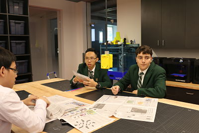

Today, we are challenged to maximize two builds using plastic straws and newspapers. The first challenge is to build a support with six straws that avoid the falling golf ball to hit the ground.
Our first approach is to build a little basket to hold the golf ball. However, we have insufficient material, plus tape and straws doesn't work well together.
Our final product is a half broken nasket xD. We failed but we learned the strongest holding pattern is cross by cross.
The second project is building the tallest tower with newspaper
Our group started off just building rolls of paper hoping to stack them high. But soon I realised we need to roll the paper into cones, stack them going smaller as it goes bigger.
It was a good idea, but we failed to physically roll them into nice shapes... unlucky xD
Anyway, it was fun to think and take on those challenges even if we failed. We learned some physics xD.
